ABOUT: "Mac Miller, was an American rapper and record producer. Miller began his career in Pittsburgh's hip hop scene in 2007, at the age of fifteen." more
info
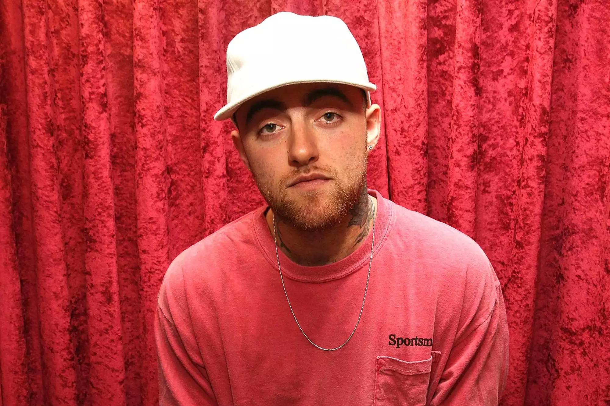
MY INTREST IN PLAYBOI CARTI: Recently I've been really into Carti.
Actually, he's been my top listened-to artist for the last 3 months. YES THE LAST 3 MONTHS!!! Carti
is 981 of my total 42,711 scrobbles. My most listened to song being Sky (152 scrobbles or 237.12+
mins) and in close place Fell In Luv (148 scrobbles or 241.24+ mins) which would also have to be my
favorite song by him.
^ This playlist above consist of many popular Mac Miller songs as well some underground songs aswell. There is a total of 43 songs and 3hr 8 mins within the playlist.
CHECK THIS MUSIC VIDEO OUT!
CHECK THIS MUSIC VIDEO OUT!
CHECK THIS COMMENTARY VIDEOS OUT!
Lana Del Rey
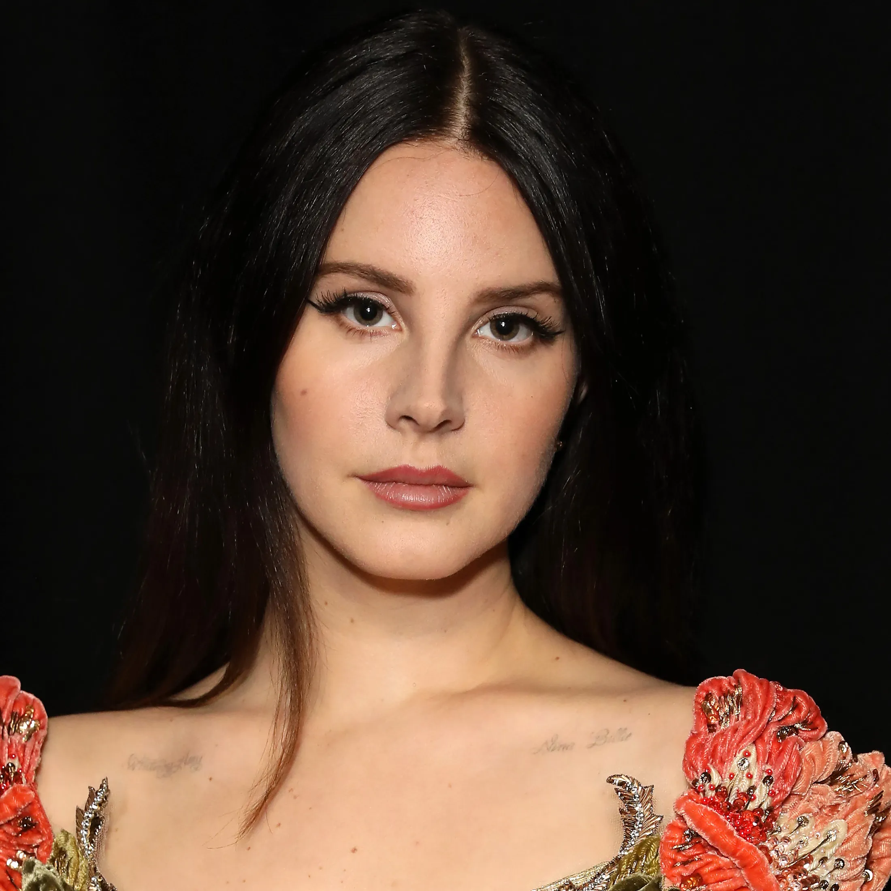
ABOUT:"Lana Del Rey, is an American singer-songwriter. Her music is noted for its cinematic quality and exploration of tragic romance, glamour, and melancholia, with frequent references to contemporary pop culture and 1950s-1960s Americana." more
info
MY INTREST IN PLAYBOI CARTI: Recently I've been really into Carti.
Actually, he's been my top listened-to artist for the last 3 months. YES THE LAST 3 MONTHS!!! Carti
is 981 of my total 42,711 scrobbles. My most listened to song being Sky (152 scrobbles or 237.12+
mins) and in close place Fell In Luv (148 scrobbles or 241.24+ mins) which would also have to be my
favorite song by him.
^ This playlist above consist of many popular Lana Del Rey songs as well as underground leaks. There is a total of 58 songs and 2hr 56 mins within the playlist.
CHECK THIS MUSIC VIDEO OUT!
CHECK THIS MUSIC VIDEO OUT!
CHECK THIS COMMENTARY VIDEO OUT!
Pink FLoyd
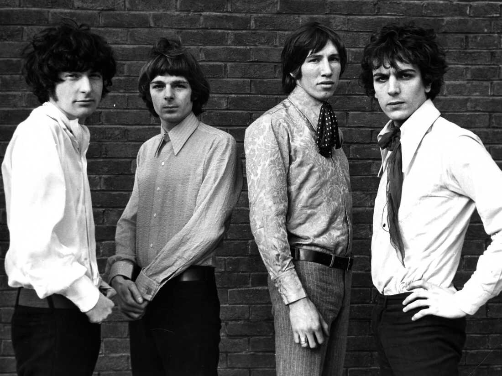
ABOUT: "Pink Floyd are an English rock band formed in London in 1965. Gaining an early following as one of the first British psychedelic groups, they were distinguished by their extended compositions, sonic experimentation, philosophical lyrics and elaborate live shows." more
info
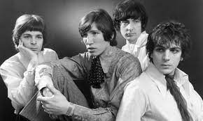
MY INTREST IN PLAYBOI CARTI: Recently I've been really into Carti.
Actually, he's been my top listened-to artist for the last 3 months. YES THE LAST 3 MONTHS!!! Carti
is 981 of my total 42,711 scrobbles. My most listened to song being Sky (152 scrobbles or 237.12+
mins) and in close place Fell In Luv (148 scrobbles or 241.24+ mins) which would also have to be my
favorite song by him.
^ This playlist above consist of many popular Pink Floyd songs.
CHECK THESE MUSIC VIDEOS OUT!
CHECK THIS COMMENTARY VIDEO OUT!
CHECK THIS PARODY VIDEO OUT!
Tv Girl
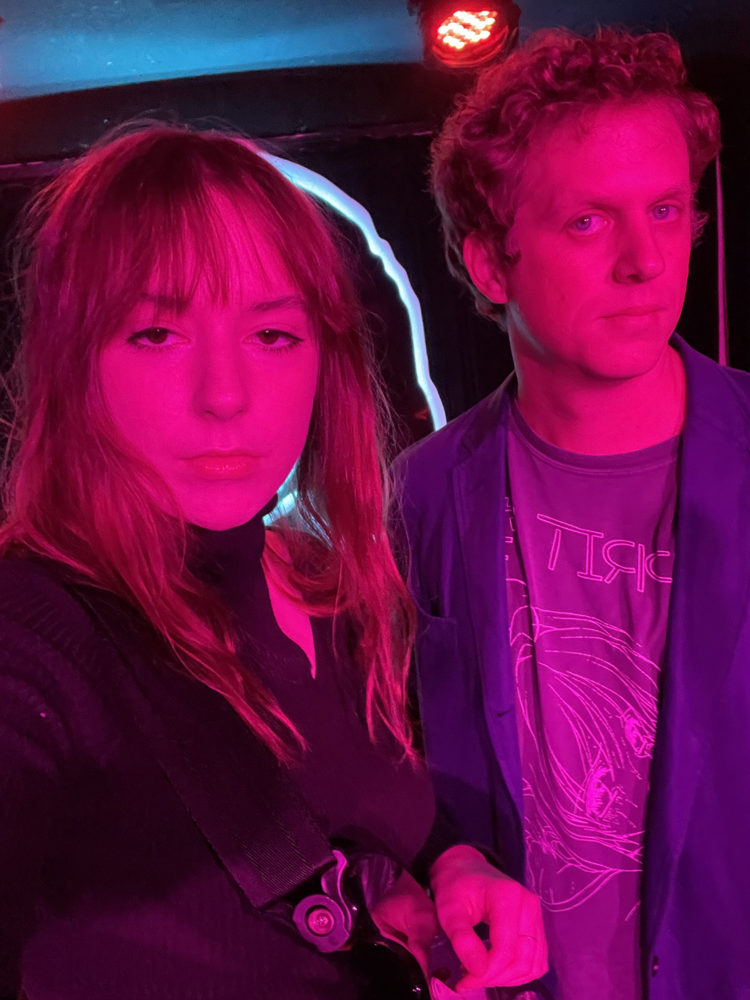
ABOUT: "TV Girl is an American indie pop band from San Diego, California, consisting of Brad Petering, Jason Wyman, Brayden Patterson, and Wyatt Harmon.
Though they failed to break into the critical mainstream, TV Girl has amassed a cult following, and their debut album French Exit is considered a staple in the indie music scene" more
info
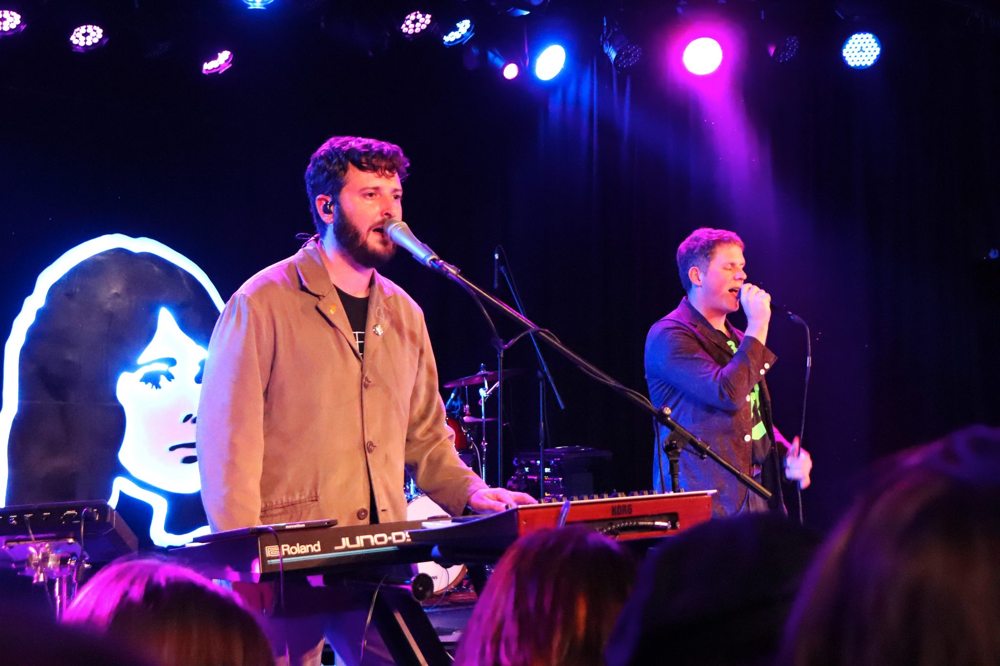
MY INTREST IN PLAYBOI CARTI: Recently I've been really into Carti.
Actually, he's been my top listened-to artist for the last 3 months. YES THE LAST 3 MONTHS!!! Carti
is 981 of my total 42,711 scrobbles. My most listened to song being Sky (152 scrobbles or 237.12+
mins) and in close place Fell In Luv (148 scrobbles or 241.24+ mins) which would also have to be my
favorite song by him.
^ This playlist above consist of many popular Tv Girl songs as well as underground ones aswell.
CHECK THIS MUSIC VIDEOS OUT!
CHECK THIS MUSIC VIDEO OUT!
John Lennon
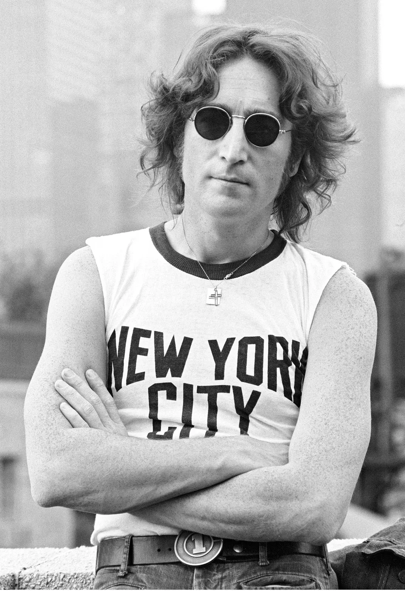
ABOUT: "John Lennon was an English singer, songwriter, musician and peace activist who achieved worldwide fame as founder, co-songwriter, co-lead vocalist and rhythm guitarist of the Beatles." more
info
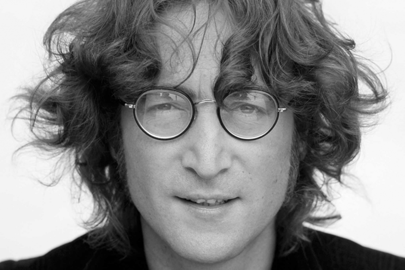
MY INTREST IN PLAYBOI CARTI: Recently I've been really into Carti.
Actually, he's been my top listened-to artist for the last 3 months. YES THE LAST 3 MONTHS!!! Carti
is 981 of my total 42,711 scrobbles. My most listened to song being Sky (152 scrobbles or 237.12+
mins) and in close place Fell In Luv (148 scrobbles or 241.24+ mins) which would also have to be my
favorite song by him.
^ This playlist above consist of many popular John Lennon songs.
CHECK THESE MUSIC VIDEOS OUT!
CHECK THIS VIDEO OUT!
CHECK THIS PARADOY VIDEO OUT!
EMIENEM
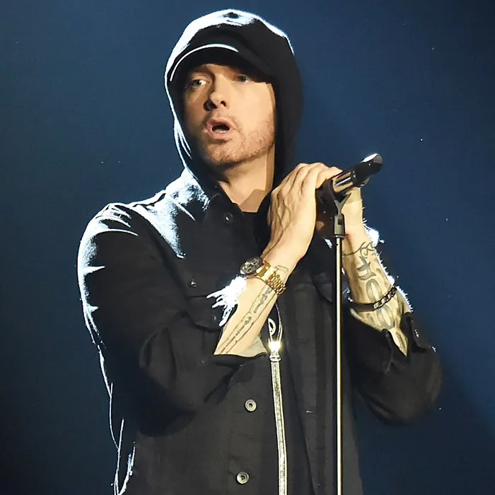
ABOUT:"Eminem is an American rapper, songwriter, record producer, record executive and actor. He is one of the most successful artists of the 21st century. In addition to his solo career, Eminem was a member of the hip hop group D12. He is known for collaborations with Detroit-based rapper Royce da 5'9"; the two are collectively known as Bad Meets Evil." more
info
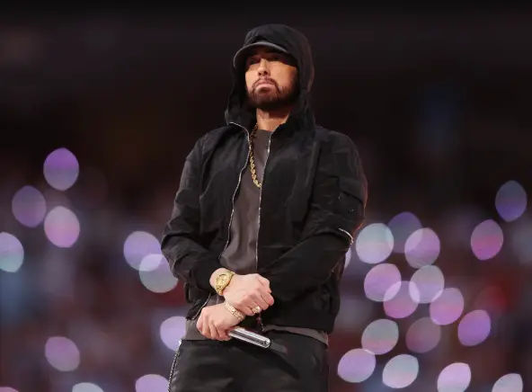
MY INTREST IN PLAYBOI CARTI: Recently I've been really into Carti.
Actually, he's been my top listened-to artist for the last 3 months. YES THE LAST 3 MONTHS!!! Carti
is 981 of my total 42,711 scrobbles. My most listened to song being Sky (152 scrobbles or 237.12+
mins) and in close place Fell In Luv (148 scrobbles or 241.24+ mins) which would also have to be my
favorite song by him.
^ This playlist above consist of many popular Eminem songs as well. There is a
total of 48 songs and 3hr 37 mins within the playlist.
CHECK THIS MUSIC VIDEOS OUT!
CHECK THIS GENIUS VIDEO OUT!
CHECK THIS PARODY VIDEO OUT!
The Beatles
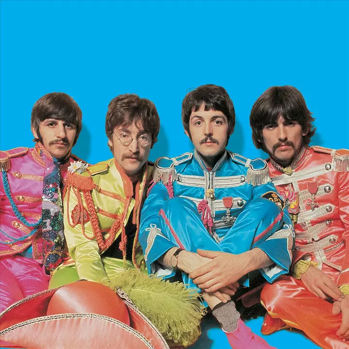
ABOUT: "The Beatles were an English rock band that became arguably
the most successful act of the 20th century. They contributed to music, film, literature, art, and
fashion, made a continuous impact on popular culture and the lifestyle of several generations." more
info
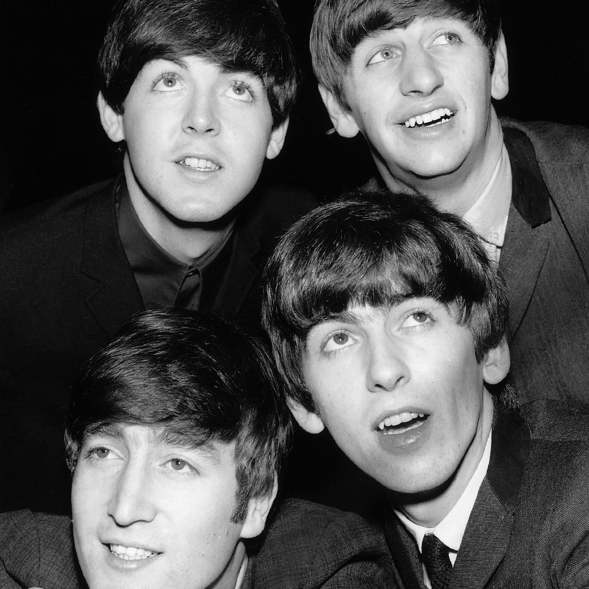
MY INTREST IN THE BEATLES: I got really into the beatles around April 2021. The Beatles come in 6th place for my All Time Top Artists on Obscurify YES THE 6TH ALL TIME TOP ARTIST OF ALL
The Beatles are 593 of my total 42,711 scrobbles. My most listened to song being Don't Let Me Down (34 scr4obbles or 237.12+
mins) and in 2nd place Across The Universe (148 scrobbles or 241.24+ mins) which would also have to be
my
favorite song by him.
^ This playlist above consist of many popular The Beatles songs. There is a
total of 76 songs and 4hr 7 mins within the playlist.
CHECK THIS MUSIC VIDEOS OUT!
CHECK THIS PARODY VIDEO OUT!
<
CHECK THIS COMMENTARY VIDEO OUT!
The Smiths
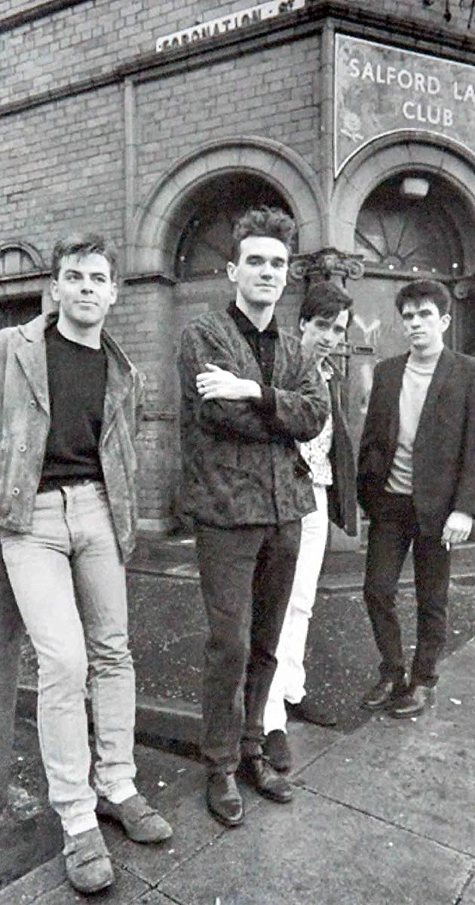
ABOUT: "The Smiths were the definitive British indie rock band of
the '80s, marking the end of synth-driven new wave and the beginning of the guitar rock that dominated
English rock into the '90s." more
info
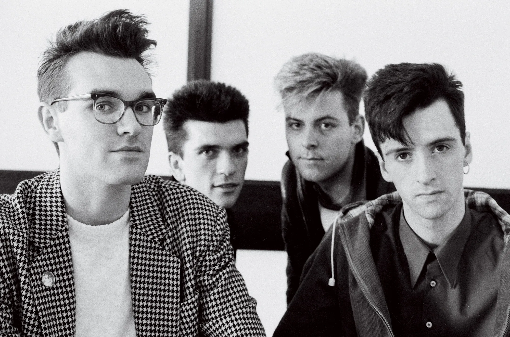
MY INTREST IN THE SMITHS: I got really into the smiths in early April 2021. From then to November the band was one of my top listened to on Spotify. This Smiths are 435 of my total 42,711 scrobbles. My most listened to song being I Know It'd Over (141 scrobbles or 386.46+ mins) which would also have to be my favorite song by him. Frankly, Mr.Shankly is my 2nd top listend to song being (39 scrobbles or
42.5+ mins).
^ This playlist above consist of many popular The Smiths songs as well as some not that well known songs.
CHECK THIS MUSIC VIDEO OUT!
CHECK THIS PARODY VIDEO OUT!
CHECK THESE COMMENTARY VIDEOS OUT!
Bashar Barakah Jackson Aka Pop Smoke
ABOUT: Pop Smoke, is a recording artist from New York, NY.
"Pop Smoke rose to fame with the release of his breakout singles "Welcome to the Party" and "Dior"
in 2019. He often collaborated with UK drill artists and producers, who employed more minimal and aggressive
instrumentation than American drill artists from Chicago, reintroducing the sound as Brooklyn drill."
more
info
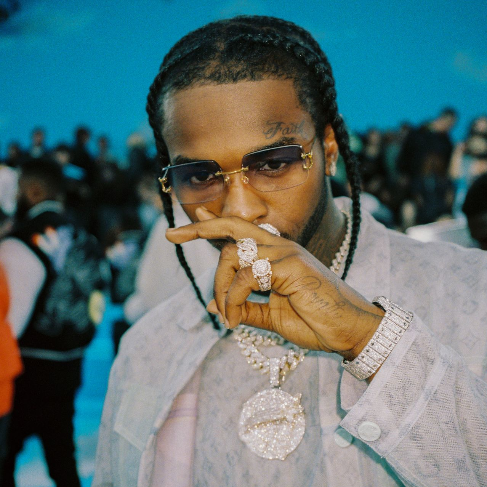
MY INTREST IN POP SMOKE: Pop has been one of my top artist for the
last 5 months YES THE LAST 5 MONTHS!!! Pop Smoke is 493 of my total 42,732 scrobbles. My most
listened to song being Dior (135 scrobbles or 225.45+ mins) and in close place Ap - (99
scrobbles or 123.75 mins) which would also have to be my favorite song by him. That and Invincible.
^ This playlist above consist of many popular Pop Smoke's songs as well as underground leaks and music
that was released after his death. There is a total of 114 songs and 5hr 26 mins within the playlist.
CHECK THIS MUSIC VIDEO OUT!
CHECK THIS GENIUS VIDEO OUT!
CHECK THIS COMMENTARY VIDEOS OUT!
Jordan Carter Aka Carti
ABOUT: Playboi Carti, is a recording artist from Atlanta,
Georgia.
"Carti's flow is simple and minimal, his production is the exact opposite, brimming with
color. Each song is dangerously catchy, often featuring addictive, melodic hooks and a kinetic rhythm to
fuel the excitement."
more info
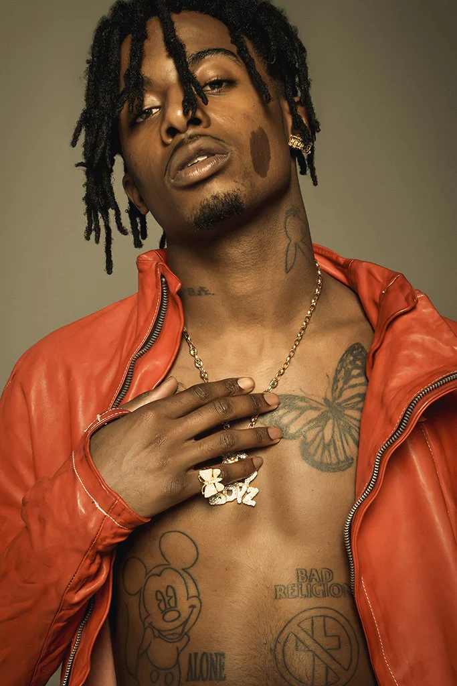
MY INTREST IN PLAYBOI CARTI: Recently I've been really into Carti.
Actually, he's been my top listened-to artist for the last 3 months. YES THE LAST 3 MONTHS!!! Carti
is 981 of my total 42,711 scrobbles. My most listened to song being Sky (152 scrobbles or 237.12+
mins) and in close place Fell In Luv (148 scrobbles or 270.58+ mins) which would also have to be my
favorite song by him.
^ This playlist above consist of many popular PlayBoi Carti songs as well as underground leaks. There is a
total of 114 songs and 5hr 26 mins within the playlist.
CHECK THIS MUSIC VIDEO OUT!
CHECK THIS MUSIC VIDEO OUT!
CHECK THIS GENIUS VIDEO OUT!
CHECK THIS COMMENTARY VIDEOS OUT!
THANK YOU FOR CHECKING MY TOP 10 LIST OF FAVORITE ARTISTS